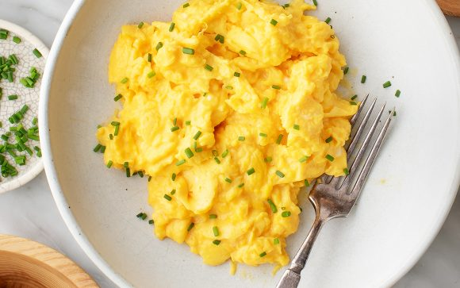

Scrambled Eggs

Fluffiest Scrambled Eggs on Planet Earth
I've been tweaking my recipe for a while now and I've finally found the
best scrambled eggs ever!
My friends and family love it, and I make it almost once a week before
school.
Ingredients
- 2 eggs
- 2 tablespoons grated Cheddar cheese
- 2 thin slices ham (Optional)
- 1 teaspoon heavy whipping cream
- 1/2 teaspoon butter
Steps:
-
Whisk eggs together in a small bowl until smooth. Mix in Cheddar cheese,
ham, and heavy cream.
-
Melt butter in a skillet over medium heat. Pour in egg mixture; cook and
stir until set but still moist, 3 to 5 minutes.